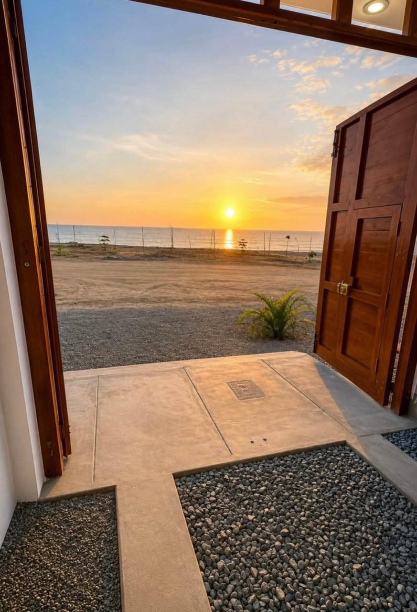
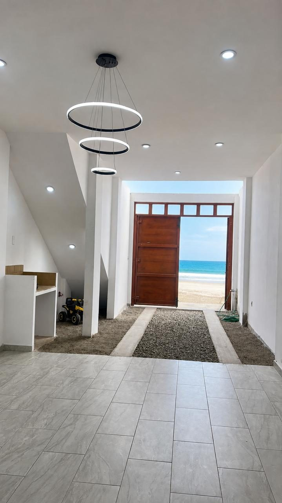
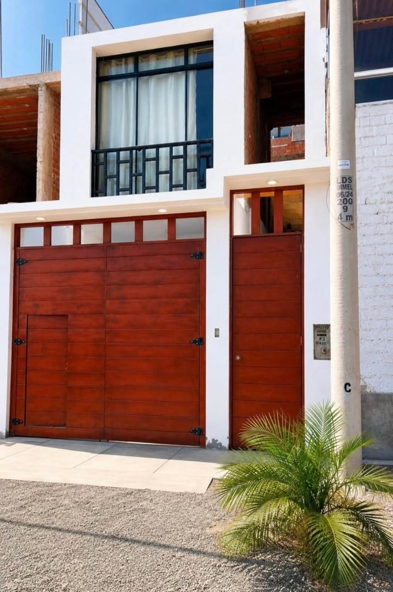
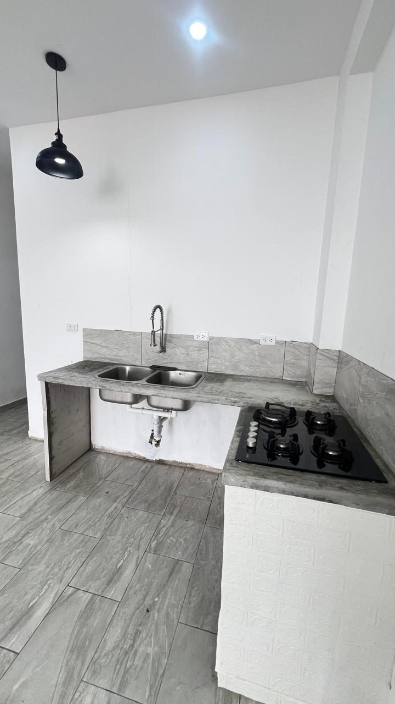
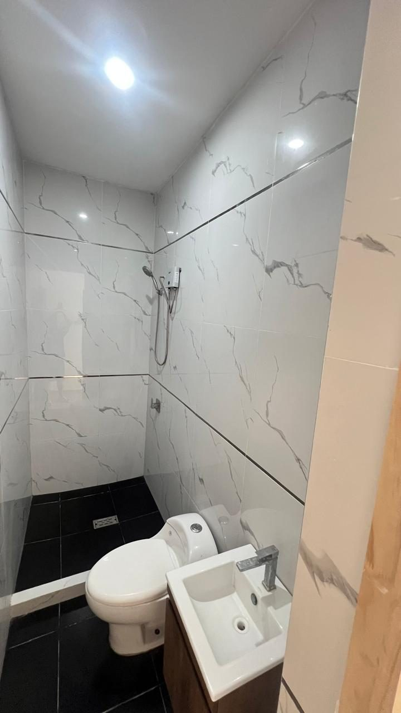
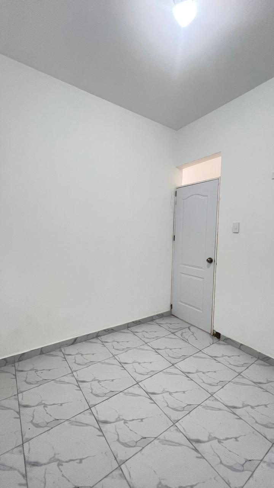
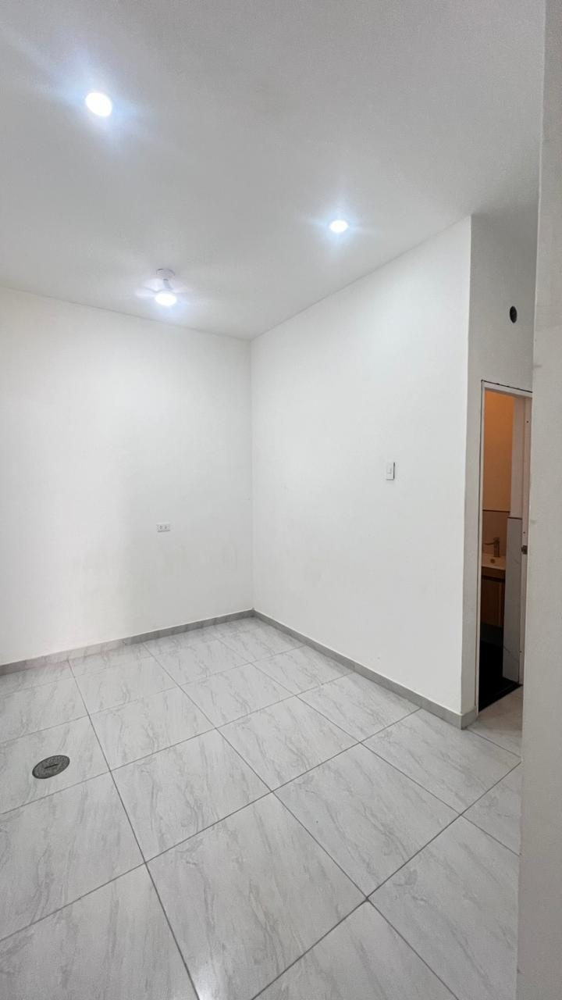

Punta Negra · Lima Sur · Segunda fila
El mar se ve desde la puerta.
Departamento de 70 m² en primer piso, con entrada independiente, cochera interna y zona de parrilla. Con su copia literal independizada en SUNARP.
US$ 77,000 Trato directo con el dueño
Lo que se compra
Segunda fila, pero con el mar de frente.
Está en la segunda fila de playa, orientado al revés: el frente del departamento mira al mar, sin la casa de adelante tapando. Se entra por puerta propia, sin pasar por áreas comunes de nadie, y el agua y la luz tienen medidor interno.
- Vista directa al mar Desde la puerta y desde el frente del departamento.
- Entrada independiente Puerta propia a la calle. No se comparte ingreso.
- Cochera interna El auto entra y queda dentro de la propiedad.
- Zona de parrilla Ambiente propio para recibir, aparte de la sala.
- Medidores propios Agua y luz con medidor interno, a nombre del que compra.
- Sala, comedor y cocina Ambientes ya terminados, con acabados puestos.
Que tenga puerta propia y medidores internos no es un detalle: es lo que permite alquilarlo por temporada sin depender de nadie ni pedirle permiso a una junta de propietarios.
Fotos
Así está hoy.
Fotos del departamento tal como se entrega. Toque cualquiera para verla en grande.






Los papeles
Está independizado. Tiene su propia partida.
En la playa, la mayoría de lo que se ofrece a este precio son derechos y acciones o casas sin dividir. Este no: está inscrito y separado en Registros Públicos, y se transfiere solo.
Copia literal de SUNARP
Independizada e inscrita. Se entrega para que el comprador la verifique antes de firmar nada.
PU y HR al día
Predial urbano y hoja de resumen en regla, sin deuda arrastrada del municipio.
Un solo dueño
Sin copropietarios, sin herederos que firmen aparte. Trato directo, sin intermediarios en el medio.
Se puede ir a ver
La visita se coordina por WhatsApp, cualquier día. Se ve el departamento y se revisan los documentos en el sitio.
Dónde queda
Punta Negra, a la altura del km 45 de la Panamericana Sur.
Calle Flamencos 420 — Punta Negra, Lima
Referencia: entre calle Flamencos y calle Tortugas
Ubicación referencial · el punto exacto se coordina por WhatsApp
¿Lo quiere ver?
Escriba por WhatsApp y coordinamos la visita. Se puede ir cualquier día, y ahí mismo se revisan los papeles.
Escribir por WhatsAppRonivel Jiménez · Asesor inmobiliario